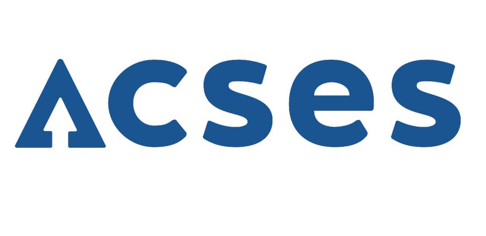

Shivam Dhanadhya
- sdhanadhya@gatech.edu
- shivam.dhanadhya@gmail.com
- +91 8087-220-673
About Me
↳ Having strong background as a backend developer and currently focused on solving problems in the storage domain at Veritas Technologies, working as a Software Engineer.
↳ Computer Science Graduate From Georgia Institute of Technology (GT) with specialization in Machine Learning with main interests in the domains of Machine Learning and Deep Learning.
Work Experience
Software Engineer - Storage Engineering
▸ Worked on POC for private IP support by Master server at platform level in Flex-Scale Appliance.
▸ Worked on master server high availability for Veritas Access-Veritas Netbackup integration release
▸ Contribution to development for iSCSI protocol support in Veritas Access
- Veritas Access
- Python
- Samba
- CIFS
- CLISH
Associate software Engineer - Storage Engineering
▸ Contributed to re-designing for Internal configuration filesystem resiliency in Veritas Access. Also, contributing to CIFS protocol support by Veritas Access.
▸ Member of the development team in Veritas Access for iSCSI block storage protocol support.
▸ Was responsible for level_0 i18N compliance by veritas Access.
▸ Part of the development team for RHEL-7 support by Veritas Access.
- Veritas Access
- SDS
- Python
- iSCSI Block Storage
- CIFS
- CLISH
Undergraduate Intern
▸ Contributed for CLISH command development for License Installation in Veritas Access for a clustered environment.
▸ Developed CLISH command for the iSCSI target. Worked on python automation for SmartIO, Licensing, iSCSI testing using VxCFT automation framework.
- Veritas Access
- VxCFT Automation
- Python
- Shell Scripting
- CLISH
Education
MS in Computer Science (Machine Learning)
▸ I am pursuing my masters in Machine Learning from College of Computing of Georgia Institute of Technology, Atlanta, USA.
▸ Courses Undertaken: Machine Learning for Trading, Software Architecture and Designing and Computer Networks.
B.Tech in Computer Science & Engineering
▸ I have completed my graduation from Computer Science and Engineering Department of Walchand College of Engineering with CPI of 8.52.
▸ Worked as President of Technical Student's Association, Association of Computer Science and Engineering (ACSES), for the year 2015-16.
Projects Completed
JUST TO BE ON THE SAFE SIDE: Safest Route Prediction
▸ This is safest route prediction system for the United States, based on past accidents' data (3 million entries). The project suggests the safest path based on accident risk severity prediction. Also, there were multiple visualization compoenents to demonstrate data visualization techniques. This was done as part of the project for the Data Visualization and Analytics course in OMSCS at Georgia Institute of Technology.
Technologies Used: Python, D3, JavaScript, SQLite, RestAPI
- Data Visualization and Analytics
- Machine Learning
- SQLite
- SQL
- D3
- HTML, CSS, JS
- Python
Database Management System for Used Car Shop
▸ The goal of this project was to implement a DBMS system for a use case of Used Car Shop. In this system, there are multiple users like Clerks, Salesperson, Managers, and Owner. The system keeps track of Vehicles in the inventory and facilitates users to do their tasks through the system as per their privileges. The system also can generate reports for Owner and Manager users regarding the sales, loan incomes, parts orders for vehicles, ragarding performance of sales-person, etc.
Technologies Used: DBMS, MySQL, Python, Tkinter
- DBMS
- MySQL
- SQL
- Tkinter
- Python
Automatic Lawnmower System
▸ Built and end-to-end system for automatic lawnmower considering various movable and immovable objects onto the given lawn layouts. Followed systematic software architecture and design approach for developing the system.
Technologies Used: Python, Django, HTML, CSS, UML.
- Python
- Full Stack Application
- Django
- UML
Product Recommender System
▸ An end-to-end application for providing product recommendation based on the old buyes by the consumer from an e-commerce website, using hybrid collaborative filtering where the user-user and user-item history is considered for the product recommnedation.
Technologies Used: Python, Machine Learning, Classification, Flask.
- Machine Learning
- Hybrid Collaborative Filterig
- Naives Bayes
Employee's Performance Analysis Applicatrion
▸ An application for providing performance analysis of an organization and employees on the basis of frequent feedback given by project manager of an organization.The application helps to plot the development and productivity graph of an organization.
Technologies Used: Python, Machine Learning, Linear Regression.
- Machine Learning
- Regression Analysis
- Python
Mechoserve
▸ This project is an android application for variety of smart phones. This application is developed for a start-up located in Pune, Maharashtra, IN. This application is developed as per the requirements of the comapny.
- Android
- Java
- Mobile Aoolication
Object Detection and Path Altering Robot
▸ Built a robot which can identify an object in its path and can accordingly alter the path with use of Arduino.
▸ Components Used: Components Used: Arduino-UNO, Ultrasonic distance measuring sensor, DC motors, Motor driver ICs, , Ultrasonic distance measuring sensor, DC motors, Motor driver ICs.
- IoT
- Arduino-UNO
- C-Programming
- Ultrasonic Sensor
Relevant course work and skills
Technical Courses
Data Visualization and Analytics, Machine Learning for Trading, Software Architecture and Designing, Machine Learning, Business Intelligence, Information Security, Data Warehousing and Data Mining, Information Retrieval, High Performance Computing, Intelligent Systems, Soft Computing, Distributed and Cloud Computing, Database Engineering, Data Structure, Internet and Web Programming, System Software, Software Engineering, Operating Systems, Design and Analysis of Algorithm, Discrete Mathematics, Data Communication and Networking, Computer Networks, Processor Architecture, Statistics and Fuzzy Systems
Technical Skills
Programming Languages: Python, C/C++, Java, SQL and Shell scripting
Machine Learning Libraries and Frameworks: NumPy, SciPy, Pandas, scikit-learn, R-studio, matplotlib
Web Technologies: HTML, CSS, JavaScript, Git, MySQL
Other Technologies and Databases : Git, Django, Oracle 11c, MySQL, PostgresSQL
Data Visualization and Data Science Tools : Azure Machine Learning Studio, Tableau, Jupyter Notebook, Spark, Argo Lite
Professional Activities & Awards
-
ACSES-Association of Computer Science & Engineering Students, WCE [link] ↳ President (Jun 2015- Jun 2016) • 1 year
-
ACM- College Campus Chapter [link]
 ↳ Chair, Knowledge Experts Committee (April 2016- May 2017) • 1 year 1 month
↳ Chair, Knowledge Experts Committee (April 2016- May 2017) • 1 year 1 month -
Dr. B. R. Ambedkar Award↳Young social worker award • By department of social justice, Government of Maharashtra, India
-
Poster Presenation at PyCon India 2019 Conference↳ Presented poster on case study for Stock Predictions at PyCon, India 2019, Chennai • October 2019